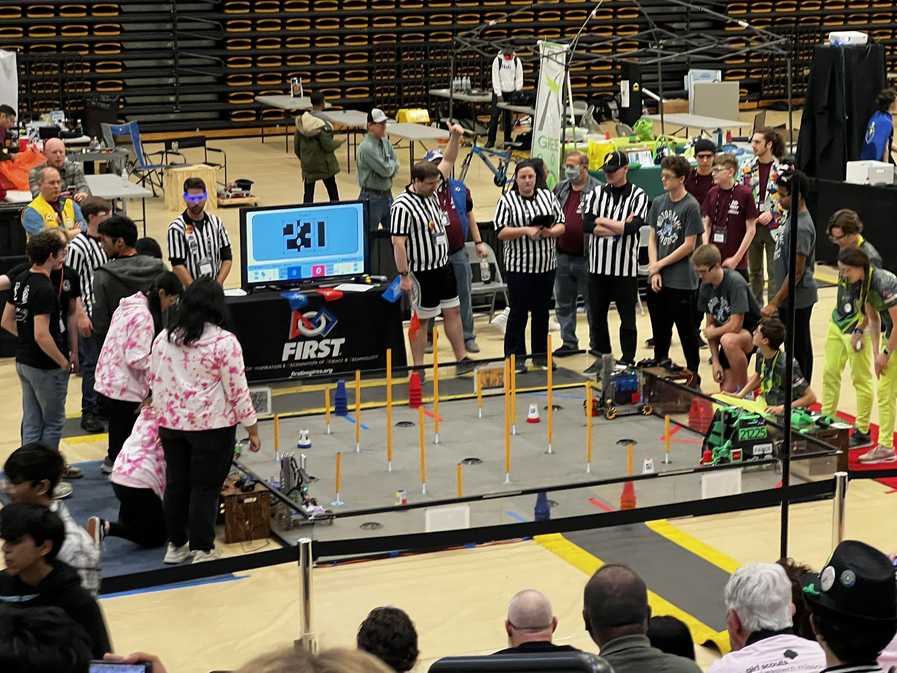

Welcome to our website dedicated to Java programming for FTC (First Tech Challenge) robotics teams.
We are here to help you excel in your FTC robotics competitions through comprehensive Java programming resources and guidance. Our purpose is to provide valuable information and support to FTC robotics enthusiasts. Whether you're a beginner or an experienced programmer, our resources and tutorials will help you master Java programming for FTC robotics.
FTC Robotics stands for "First Tech Challenge Robotics." It is a competitive robotics program specifically designed for middle and high school students. FTC is one of the programs offered by FIRST (For Inspiration and Recognition of Science and Technology), a non-profit organization founded by inventor Dean Kamen. FTC provides students with the opportunity to design, build, and program robots to compete in challenging and exciting games and tasks.
